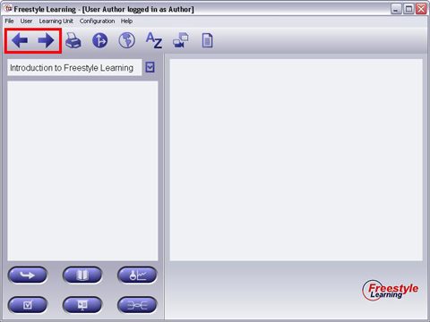

Once you entered a view, you can select Elements from the Structure Tree Panel. You are free to switch to other Elements, Views and Learning Units at any time. The Main Navigation Buttons provide a selection history and make navigation back and forth quite comfortable.

Click on the Back Button to go back to the last selected Element. Once you went back in navigation history, you can click the Forward Button to go back where you came from. This navigation facility works across different Views and even across different Learning Units.
Use them whenever you like to!
Back to Main Help Page